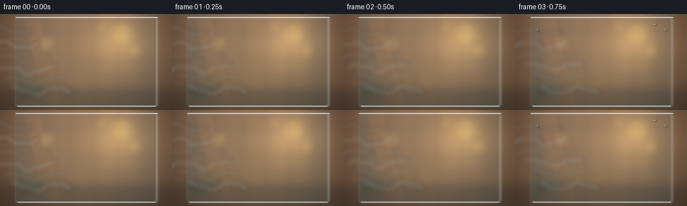
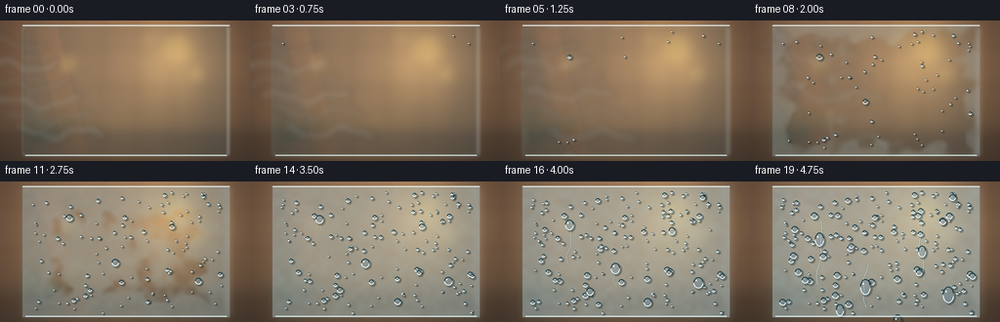
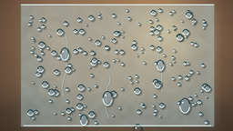

CODING AGENTS AS PIXEL WORLD MODELS
traex/GPT-5.6-Sol · phygen_101
点击播放 · 原生 RGB 像素
逐轮保存的候选
回放视频、检查图与代码变化。
每份候选均可单独播放。实际图片检查记录在下方工具轨迹中。
候选 01播放与检查图
点击播放 · 原生 RGB 像素


展开代码变化
--- 上一保存版本
+++ 本次保存版本
@@ -0,0 +1,192 @@
+from pathlib import Path
+import numpy as np
+from PIL import Image, ImageDraw, ImageFilter
+import artifact_io
+
+# Procedural macro timelapse of condensation on a chilled glass panel.
+W, H, N = 256, 144, 20
+S = 3
+w, h = W*S, H*S
+rng = np.random.default_rng(101)
+
+
+def smoothstep(a, b, x):
+ z = np.clip((x-a)/(b-a), 0, 1)
+ return z*z*(3-2*z)
+
+
+def noise_field(seed, coarse=(18, 11), blur=8):
+ rr = np.random.default_rng(seed)
+ a = rr.random((coarse[1], coarse[0]))
+ lo = Image.fromarray(np.uint8(a*255), 'L')
+ return np.asarray(lo.resize((w, h), Image.Resampling.BICUBIC).filter(ImageFilter.GaussianBlur(blur*S)), dtype=np.float32)/255
+
+# Warm, deliberately out-of-focus bathroom/interior behind the glass.
+yy, xx = np.mgrid[0:h, 0:w]
+base = np.zeros((h,w,3), np.float32)
+base[...,0] = 116 + 45*(1-yy/h) + 18*np.sin(xx/w*np.pi)
+base[...,1] = 91 + 31*(1-yy/h) + 10*np.sin(xx/w*np.pi)
+base[...,2] = 69 + 24*(1-yy/h)
+# warm light pool in the distance
+light = np.exp(-(((xx-.70*w)/(.23*w))**2 + ((yy-.28*h)/(.40*h))**2)*2.0)
+base += light[...,None]*np.array([62,49,24])
+# soft vignette
+vig = 1 - .24*((xx-w/2)/(w/2))**2 - .16*((yy-h/2)/(h/2))**2
+base *= vig[...,None]
+base = np.uint8(np.clip(base,0,255))
+bg = Image.fromarray(base, 'RGB')
+# blurred tile seams and shapes behind the pane
+bd = ImageDraw.Draw(bg, 'RGBA')
+for x in [6, 105, 209, 315, 421, 527, 635, 741]:
+ bd.line((x,0,x,h), fill=(60,47,40,40), width=3*S)
+for y in [80, 205, 332, 425]:
+ bd.line((0,y,w,y), fill=(63,48,42,36), width=3*S)
+# far shelf and a plant silhouette
+bd.rectangle((0,113*S,w,144*S), fill=(49,42,39,75))
+for k in range(8):
+ x0=(22+k*8)*S; y0=(122-rng.integers(5,30))*S
+ bd.line((34*S,124*S,x0,y0), fill=(30,55,44,90), width=2*S)
+ bd.ellipse((x0-5*S,y0-3*S,x0+5*S,y0+3*S), fill=(39,70,54,72))
+# bokeh practical lights
+for cx,cy,r in [(181,30,14),(202,55,6),(153,19,4),(70,44,7)]:
+ bd.ellipse(((cx-r)*S,(cy-r)*S,(cx+r)*S,(cy+r)*S), fill=(255,205,112,100))
+bg = bg.filter(ImageFilter.GaussianBlur(5*S))
+
+# Glass occupies most of the composition but its edges remain unambiguous.
+GX0, GX1, GY0, GY1 = 23*S, 235*S, 5*S, 139*S
+# stable microtexture / condensation threshold fields
+n1 = noise_field(3, (20,12), 2)
+n2 = noise_field(8, (42,24), 1)
+# glass-local distance-to-edge encourages first fog around cool boundaries
+xin = np.minimum((xx-GX0)/(38*S), (GX1-xx)/(38*S))
+yin = np.minimum((yy-GY0)/(29*S), (GY1-yy)/(29*S))
+edge = 1-np.clip(np.minimum(xin,yin),0,1)
+# also a colder diagonal patch center-left
+coldpatch = np.exp(-(((xx-93*S)/(80*S))**2 + ((yy-65*S)/(70*S))**2))
+threshold = .68 - .37*edge - .18*coldpatch + .25*(n1-.5) + .10*(n2-.5)
+threshold = np.clip(threshold,.12,.88)
+glass_mask = (xx>=GX0)&(xx<=GX1)&(yy>=GY0)&(yy<=GY1)
+
+# Persistent droplet population. Birth is earlier where microscopic fog develops first.
+drops=[]
+for i in range(190):
+ x = rng.uniform(29,229); y = rng.uniform(10,135)
+ e = max(0, 1-min((x-23)/36,(235-x)/36,(y-5)/28,(139-y)/28))
+ birth = np.clip(rng.uniform(.25,.95)-.22*e, .08,.92)
+ rmax = rng.choice([.8,1.0,1.25,1.5,1.8,2.2,2.8,3.5], p=[.10,.12,.14,.15,.14,.13,.12,.10])
+ drops.append((x,y,birth,rmax,rng.uniform(0,6.28)))
+# Hero drops create readable growth and coalescence.
+drops += [(71,37,.17,4.8,.4),(118,83,.30,5.4,2.1),(176,46,.38,4.1,1.4),
+ (203,102,.46,5.8,5.0),(92,111,.50,4.3,3.0),(151,123,.56,4.9,.1)]
+
+
+def draw_wisps(im, t):
+ # vapor visibly approaches from the warm left and dissipates as it condenses
+ if t > .76: return im
+ layer = Image.new('RGBA',(w,h),(0,0,0,0)); d=ImageDraw.Draw(layer,'RGBA')
+ intensity = int(52*(1-smoothstep(.52,.78,t)) + 10)
+ for j in range(6):
+ phase = j*.77
+ startx = (-45 + 128*t + j*12)*S
+ cy = (24+j*19 + 5*np.sin(phase+t*8))*S
+ pts=[]
+ for q in range(34):
+ px=startx+q*2.8*S
+ py=cy + (5*np.sin(q*.29+phase+t*5)+2*np.sin(q*.67+phase))*S
+ pts.append((px,py))
+ d.line(pts, fill=(220,237,236,intensity), width=(5+j%2*2)*S, joint='curve')
+ layer=layer.filter(ImageFilter.GaussianBlur(4*S))
+ return Image.alpha_composite(im.convert('RGBA'),layer)
+
+
+def add_droplet(layer, source, x, y, r, stretch=1.0):
+ # A small refractive lens: offset/brightened background patch + rim + shadow.
+ px,py=int(x*S),int(y*S); rr=max(2,int(r*S)); ry=max(2,int(rr*stretch))
+ # soft lower-right contact shadow
+ sh=Image.new('RGBA',(w,h),(0,0,0,0)); sd=ImageDraw.Draw(sh,'RGBA')
+ sd.ellipse((px-rr+S,py-ry+S,px+rr+2*S,py+ry+2*S), fill=(12,31,37,90))
+ sh=sh.filter(ImageFilter.GaussianBlur(max(1,int(.6*S))))
+ layer.alpha_composite(sh)
+ # sample and magnify local source slightly, masked elliptically
+ box=(max(0,px-rr),max(0,py-ry),min(w,px+rr+1),min(h,py+ry+1))
+ if box[2]>box[0] and box[3]>box[1]:
+ crop=source.crop(box).resize((box[2]-box[0],box[3]-box[1]),Image.Resampling.BICUBIC)
+ arr=np.asarray(crop).astype(np.float32)
+ arr=np.clip(arr*np.array([.91,.98,1.07])+8,0,255).astype(np.uint8)
+ patch=Image.fromarray(arr,'RGB').convert('RGBA')
+ mask=Image.new('L',patch.size,0); md=ImageDraw.Draw(mask)
+ md.ellipse((0,0,patch.width-1,patch.height-1),fill=210)
+ patch.putalpha(mask); layer.alpha_composite(patch,(box[0],box[1]))
+ d=ImageDraw.Draw(layer,'RGBA')
+ # dark lower arc, icy bright upper-left crescent, pin highlight
+ d.arc((px-rr,py-ry,px+rr,py+ry), 10,176, fill=(229,248,250,210), width=max(1,S))
+ d.arc((px-rr,py-ry,px+rr,py+ry), 185,350, fill=(24,60,69,150), width=max(1,S))
+ hr=max(1,int(rr*.16))
+ d.ellipse((px-int(rr*.42)-hr,py-int(ry*.42)-hr,px-int(rr*.42)+hr,py-int(ry*.42)+hr),fill=(255,255,255,225))
+
+frames=[]
+for fi in range(N):
+ t=fi/(N-1)
+ im=bg.convert('RGBA')
+ # Clear chilled glass: subtle blue tint and reflection even before fog arrives.
+ glass=Image.new('RGBA',(w,h),(0,0,0,0)); gd=ImageDraw.Draw(glass,'RGBA')
+ gd.rounded_rectangle((GX0,GY0,GX1,GY1),radius=4*S,fill=(109,158,171,32),outline=(212,237,239,95),width=S)
+ # cool vertical sheen/reflection
+ gd.polygon([(35*S,7*S),(58*S,7*S),(91*S,138*S),(68*S,138*S)],fill=(217,242,244,18))
+ gd.line((GX1-2*S,GY0+2*S,GX1-2*S,GY1-2*S),fill=(235,247,247,125),width=S)
+ gd.line((GX0+1*S,GY0+4*S,GX0+1*S,GY1-4*S),fill=(25,66,75,75),width=S)
+ im=Image.alpha_composite(im,glass)
+ im=draw_wisps(im,t)
+
+ # Fogging advances nonlinearly in the timelapse. It blurs and whitens the scene.
+ progress = .04 + .96*smoothstep(.02,.98,t)
+ cov = smoothstep(threshold-.08, threshold+.12, progress)
+ cov *= glass_mask
+ # mottled optical depth, increasing but retaining watery translucency
+ alpha = cov*(.11 + .39*smoothstep(.08,1,t))*(.83+.17*n2)
+ # blur background beneath fog so condensation reads as physical scattering
+ fogged = im.convert('RGB').filter(ImageFilter.GaussianBlur((1.0+3.2*t)*S))
+ fa=np.asarray(fogged).astype(np.float32)
+ cool=np.empty_like(fa); cool[:]=[188,211,211]
+ fogarr=fa*(1-alpha[...,None]) + cool*alpha[...,None]
+ im=Image.fromarray(np.uint8(np.clip(fogarr,0,255)),'RGB').convert('RGBA')
+
+ # meandering rivulets appear late when neighboring beads have coalesced.
+ trail=Image.new('RGBA',(w,h),(0,0,0,0)); td=ImageDraw.Draw(trail,'RGBA')
+ for j,(x0,y0,birth,length) in enumerate([(71,37,.58,69),(118,83,.68,46),(176,46,.76,55)]):
+ q=smoothstep(birth,1,t)
+ if q>0:
+ pts=[]
+ steps=25
+ for k in range(steps):
+ frac=k/(steps-1); yy0=y0+length*q*frac
+ xx0=x0+2.2*np.sin(frac*5+j*1.7)+1.0*np.sin(frac*13)
+ pts.append((xx0*S,yy0*S))
+ td.line(pts,fill=(211,239,241,int(115*q)),width=max(S,int(1.4*S)),joint='curve')
+ td.line([(a+S,b) for a,b in pts],fill=(29,67,73,int(75*q)),width=max(1,S//2))
+ trail=trail.filter(ImageFilter.GaussianBlur(.25*S))
+ im=Image.alpha_composite(im,trail)
+
+ # Growing beads appear only after local fog. Several large beads run downward late.
+ source=im.convert('RGB')
+ for di,(x,y,birth,rmax,phase) in enumerate(drops):
+ if t <= birth: continue
+ age=(t-birth)/(1-birth)
+ r=rmax*(.20+.80*np.sqrt(age))
+ yypos=y
+ stretch=1.0
+ if (di>=190 and age>.55):
+ run=(age-.55)/.45
+ yypos=y+(run*run)*(20+6*np.sin(phase))
+ stretch=1.0+.5*run
+ add_droplet(im,source,x,yypos,r,stretch)
+
+ # Crisp pane edge and a slim bead of moisture along the bottom seal.
+ ed=ImageDraw.Draw(im,'RGBA')
+ ed.line((GX0+3*S,GY1-1*S,GX1-3*S,GY1-1*S),fill=(220,242,241,100+int(70*t)),width=S)
+ ed.line((GX0,GY0,GX1,GY0),fill=(237,248,247,95),width=S)
+ out=im.convert('RGB').resize((W,H),Image.Resampling.LANCZOS)
+ frames.append(np.asarray(out,dtype=np.uint8))
+
+frames=np.stack(frames)
+artifact_io.save(frames, Path(__file__).resolve().parent)
可观测工具轨迹
实际执行的命令与返回图片。
命令 1exit 0
/bin/bash -lc "cat prompt.txt && printf '\\n---RULES---\\n' && cat GENERATION_RULES.md && printf '\\n---SPEC---\\n' && cat task_spec.json"
命令 2exit 0
/bin/bash -lc "find . -maxdepth 2 -type f -printf '%p\\n' | sort"
命令 3exit 0
/bin/bash -lc "sed -n '1,240p' artifact_io.py"
命令 4exit 0
/bin/bash -lc "cat > generate.py <<'PY'
from pathlib import Path
import numpy as np
from PIL import Image, ImageDraw, ImageFilter
import artifact_io
# Procedural macro timelapse of condensation on a chilled glass panel.
W, H, N = 256, 144, 20
S = 3
w, h = W*S, H*S
rng = np.random.default_rng(101)
def smoothstep(a, b, x):
z = np.clip((x-a)/(b-a), 0, 1)
return z*z*(3-2*z)
def noise_field(seed, coarse=(18, 11), blur=8):
rr = np.random.default_rng(seed)
a = rr.random((coarse[1], coarse[0]))
lo = Image.fromarray(np.uint8(a*255), 'L')
return np.asarray(lo.resize((w, h), Image.Resampling.BICUBIC).filter(ImageFilter.GaussianBlur(blur*S)), dtype=np.float32)/255
# Warm, deliberately out-of-focus bathroom/interior behind the glass.
yy, xx = np.mgrid[0:h, 0:w]
base = np.zeros((h,w,3), np.float32)
base[...,0] = 116 + 45*(1-yy/h) + 18*np.sin(xx/w*np.pi)
base[...,1] = 91 + 31*(1-yy/h) + 10*np.sin(xx/w*np.pi)
base[...,2] = 69 + 24*(1-yy/h)
# warm light pool in the distance
light = np.exp(-(((xx-.70*w)/(.23*w))**2 + ((yy-.28*h)/(.40*h))**2)*2.0)
base += light[...,None]*np.array([62,49,24])
# soft vignette
vig = 1 - .24*((xx-w/2)/(w/2))**2 - .16*((yy-h/2)/(h/2))**2
base *= vig[...,None]
base = np.uint8(np.clip(base,0,255))
bg = Image.fromarray(base, 'RGB')
# blurred tile seams and shapes behind the pane
bd = ImageDraw.Draw(bg, 'RGBA')
for x in [6, 105, 209, 315, 421, 527, 635, 741]:
bd.line((x,0,x,h), fill=(60,47,40,40), width=3*S)
for y in [80, 205, 332, 425]:
bd.line((0,y,w,y), fill=(63,48,42,36), width=3*S)
# far shelf and a plant silhouette
bd.rectangle((0,113*S,w,144*S), fill=(49,42,39,75))
for k in range(8):
x0=(22+k*8)*S; y0=(122-rng.integers(5,30))*S
bd.line((34*S,124*S,x0,y0), fill=(30,55,44,90), width=2*S)
bd.ellipse((x0-5*S,y0-3*S,x0+5*S,y0+3*S), fill=(39,70,54,72))
# bokeh practical lights
for cx,cy,r in [(181,30,14),(202,55,6),(153,19,4),(70,44,7)]:
bd.ellipse(((cx-r)*S,(cy-r)*S,(cx+r)*S,(cy+r)*S), fill=(255,205,112,100))
bg = bg.filter(ImageFilter.GaussianBlur(5*S))
# Glass occupies most of the composition but its edges remain unambiguous.
GX0, GX1, GY0, GY1 = 23*S, 235*S, 5*S, 139*S
# stable microtexture / condensation threshold fields
n1 = noise_field(3, (20,12), 2)
n2 = noise_field(8, (42,24), 1)
# glass-local distance-to-edge encourages first fog around cool boundaries
xin = np.minimum((xx-GX0)/(38*S), (GX1-xx)/(38*S))
yin = np.minimum((yy-GY0)/(29*S), (GY1-yy)/(29*S))
edge = 1-np.clip(np.minimum(xin,yin),0,1)
# also a colder diagonal patch center-left
coldpatch = np.exp(-(((xx-93*S)/(80*S))**2 + ((yy-65*S)/(70*S))**2))
threshold = .68 - .37*edge - .18*coldpatch + .25*(n1-.5) + .10*(n2-.5)
threshold = np.clip(threshold,.12,.88)
glass_mask = (xx>=GX0)&(xx<=GX1)&(yy>=GY0)&(yy<=GY1)
# Persistent droplet population. Birth is earlier where microscopic fog develops first.
drops=[]
for i in range(190):
x = rng.uniform(29,229); y = rng.uniform(10,135)
e = max(0, 1-min((x-23)/36,(235-x)/36,(y-5)/28,(139-y)/28))
birth = np.clip(rng.uniform(.25,.95)-.22*e, .08,.92)
rmax = rng.choice([.8,1.0,1.25,1.5,1.8,2.2,2.8,3.5], p=[.10,.12,.14,.15,.14,.13,.12,.10])
drops.append((x,y,birth,rmax,rng.uniform(0,6.28)))
# Hero drops create readable growth and coalescence.
drops += [(71,37,.17,4.8,.4),(118,83,.30,5.4,2.1),(176,46,.38,4.1,1.4),
(203,102,.46,5.8,5.0),(92,111,.50,4.3,3.0),(151,123,.56,4.9,.1)]
def draw_wisps(im, t):
# vapor visibly approaches from the warm left and dissipates as it condenses
if t > .76: return im
layer = Image.new('RGBA',(w,h),(0,0,0,0)); d=ImageDraw.Draw(layer,'RGBA')
intensity = int(52*(1-smoothstep(.52,.78,t)) + 10)
for j in range(6):
phase = j*.77
startx = (-45 + 128*t + j*12)*S
cy = (24+j*19 + 5*np.sin(phase+t*8))*S
pts=[]
for q in range(34):
px=startx+q*2.8*S
py=cy + (5*np.sin(q*.29+phase+t*5)+2*np.sin(q*.67+phase))*S
pts.append((px,py))
d.line(pts, fill=(220,237,236,intensity), width=(5+j%2*2)*S, joint='curve')
layer=layer.filter(ImageFilter.GaussianBlur(4*S))
return Image.alpha_composite(im.convert('RGBA'),layer)
def add_droplet(layer, source, x, y, r, stretch=1.0):
# A small refractive lens: offset/brightened background patch + rim + shadow.
px,py=int(x*S),int(y*S); rr=max(2,int(r*S)); ry=max(2,int(rr*stretch))
# soft lower-right contact shadow
sh=Image.new('RGBA',(w,h),(0,0,0,0)); sd=ImageDraw.Draw(sh,'RGBA')
sd.ellipse((px-rr+S,py-ry+S,px+rr+2*S,py+ry+2*S), fill=(12,31,37,90))
sh=sh.filter(ImageFilter.GaussianBlur(max(1,int(.6*S))))
layer.alpha_composite(sh)
# sample and magnify local source slightly, masked elliptically
box=(max(0,px-rr),max(0,py-ry),min(w,px+rr+1),min(h,py+ry+1))
if box[2]>box[0] and box[3]>box[1]:
crop=source.crop(box).resize((box[2]-box[0],box[3]-box[1]),Image.Resampling.BICUBIC)
arr=np.asarray(crop).astype(np.float32)
arr=np.clip(arr*np.array([.91,.98,1.07])+8,0,255).astype(np.uint8)
patch=Image.fromarray(arr,'RGB').convert('RGBA')
mask=Image.new('L',patch.size,0); md=ImageDraw.Draw(mask)
md.ellipse((0,0,patch.width-1,patch.height-1),fill=210)
patch.putalpha(mask); layer.alpha_composite(patch,(box[0],box[1]))
d=ImageDraw.Draw(layer,'RGBA')
# dark lower arc, icy bright upper-left crescent, pin highlight
d.arc((px-rr,py-ry,px+rr,py+ry), 10,176, fill=(229,248,250,210), width=max(1,S))
d.arc((px-rr,py-ry,px+rr,py+ry), 185,350, fill=(24,60,69,150), width=max(1,S))
hr=max(1,int(rr*.16))
d.ellipse((px-int(rr*.42)-hr,py-int(ry*.42)-hr,px-int(rr*.42)+hr,py-int(ry*.42)+hr),fill=(255,255,255,225))
frames=[]
for fi in range(N):
t=fi/(N-1)
im=bg.convert('RGBA')
# Clear chilled glass: subtle blue tint and reflection even before fog arrives.
glass=Image.new('RGBA',(w,h),(0,0,0,0)); gd=ImageDraw.Draw(glass,'RGBA')
gd.rounded_rectangle((GX0,GY0,GX1,GY1),radius=4*S,fill=(109,158,171,32),outline=(212,237,239,95),width=S)
# cool vertical sheen/reflection
gd.polygon([(35*S,7*S),(58*S,7*S),(91*S,138*S),(68*S,138*S)],fill=(217,242,244,18))
gd.line((GX1-2*S,GY0+2*S,GX1-2*S,GY1-2*S),fill=(235,247,247,125),width=S)
gd.line((GX0+1*S,GY0+4*S,GX0+1*S,GY1-4*S),fill=(25,66,75,75),width=S)
im=Image.alpha_composite(im,glass)
im=draw_wisps(im,t)
# Fogging advances nonlinearly in the timelapse. It blurs and whitens the scene.
progress = .04 + .96*smoothstep(.02,.98,t)
cov = smoothstep(threshold-.08, threshold+.12, progress)
cov *= glass_mask
# mottled optical depth, increasing but retaining watery translucency
alpha = cov*(.11 + .39*smoothstep(.08,1,t))*(.83+.17*n2)
# blur background beneath fog so condensation reads as physical scattering
fogged = im.convert('RGB').filter(ImageFilter.GaussianBlur((1.0+3.2*t)*S))
fa=np.asarray(fogged).astype(np.float32)
cool=np.empty_like(fa); cool[:]=[188,211,211]
fogarr=fa*(1-alpha[...,None]) + cool*alpha[...,None]
im=Image.fromarray(np.uint8(np.clip(fogarr,0,255)),'RGB').convert('RGBA')
# meandering rivulets appear late when neighboring beads have coalesced.
trail=Image.new('RGBA',(w,h),(0,0,0,0)); td=ImageDraw.Draw(trail,'RGBA')
for j,(x0,y0,birth,length) in enumerate([(71,37,.58,69),(118,83,.68,46),(176,46,.76,55)]):
q=smoothstep(birth,1,t)
if q>0:
pts=[]
steps=25
for k in range(steps):
frac=k/(steps-1); yy0=y0+length*q*frac
xx0=x0+2.2*np.sin(frac*5+j*1.7)+1.0*np.sin(frac*13)
pts.append((xx0*S,yy0*S))
td.line(pts,fill=(211,239,241,int(115*q)),width=max(S,int(1.4*S)),joint='curve')
td.line([(a+S,b) for a,b in pts],fill=(29,67,73,int(75*q)),width=max(1,S//2))
trail=trail.filter(ImageFilter.GaussianBlur(.25*S))
im=Image.alpha_composite(im,trail)
# Growing beads appear only after local fog. Several large beads run downward late.
source=im.convert('RGB')
for di,(x,y,birth,rmax,phase) in enumerate(drops):
if t <= birth: continue
age=(t-birth)/(1-birth)
r=rmax*(.20+.80*np.sqrt(age))
yypos=y
stretch=1.0
if (di>=190 and age>.55):
run=(age-.55)/.45
yypos=y+(run*run)*(20+6*np.sin(phase))
stretch=1.0+.5*run
add_droplet(im,source,x,yypos,r,stretch)
# Crisp pane edge and a slim bead of moisture along the bottom seal.
ed=ImageDraw.Draw(im,'RGBA')
ed.line((GX0+3*S,GY1-1*S,GX1-3*S,GY1-1*S),fill=(220,242,241,100+int(70*t)),width=S)
ed.line((GX0,GY0,GX1,GY0),fill=(237,248,247,95),width=S)
out=im.convert('RGB').resize((W,H),Image.Resampling.LANCZOS)
frames.append(np.asarray(out,dtype=np.uint8))
frames=np.stack(frames)
artifact_io.save(frames, Path(__file__).resolve().parent)
PY
python generate.py
ls -lh pixels.npz index.html inspection.png frames/00.png frames/19.png"命令 5exit 0
/bin/bash -lc "python - <<'PY'
import numpy as np
from PIL import Image
z=np.load('pixels.npz')['pixels']
print('pixels',z.shape,z.dtype)
ims=[]
for i in range(20):
im=np.asarray(Image.open(f'frames/{i:02d}.png'))
ims.append(im)
a=np.stack(ims)
print('frames',a.shape,a.dtype,'range',a.min(),a.max(),'mean adjacent change',np.abs(np.diff(a.astype(float),axis=0)).mean())
PY"视觉工具实际返回图片 1

视觉工具实际返回图片 2

视觉工具实际返回图片 3

保存候选 1 份；完成命令 5 次；可验证图片返回 3 张。原始 API 响应与完整日志保留在本地。